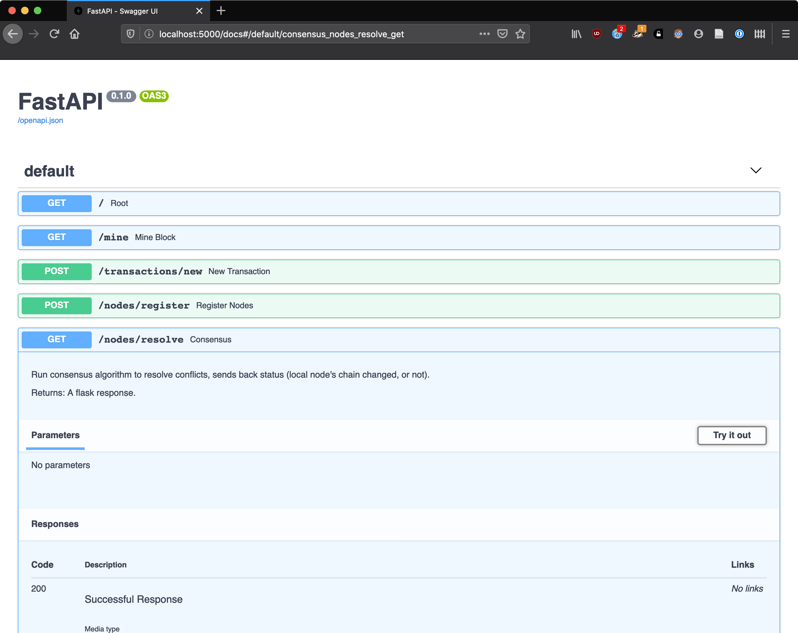
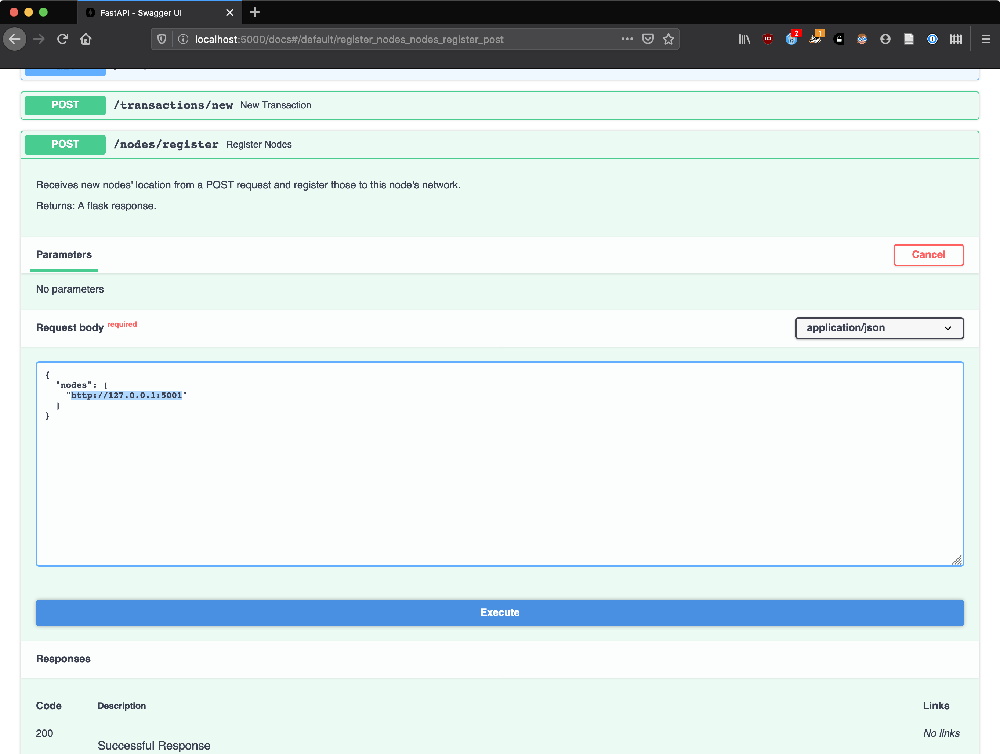
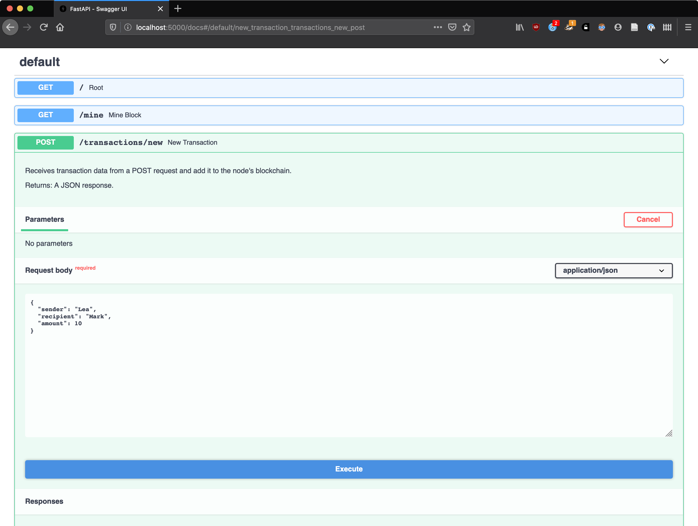
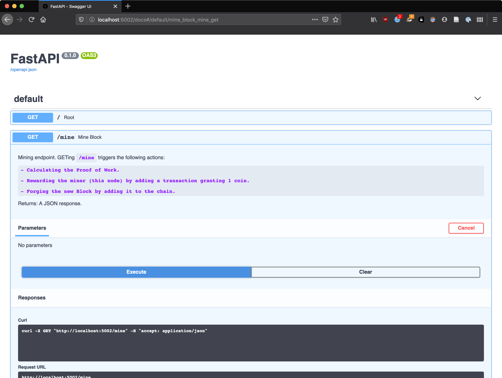
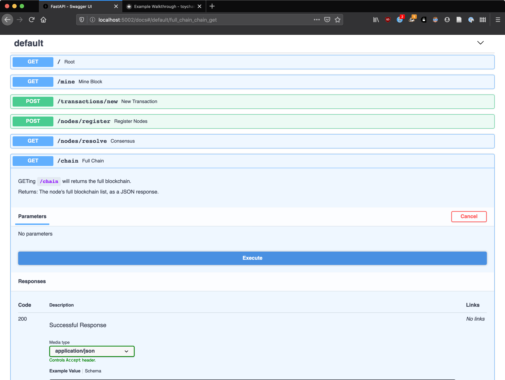
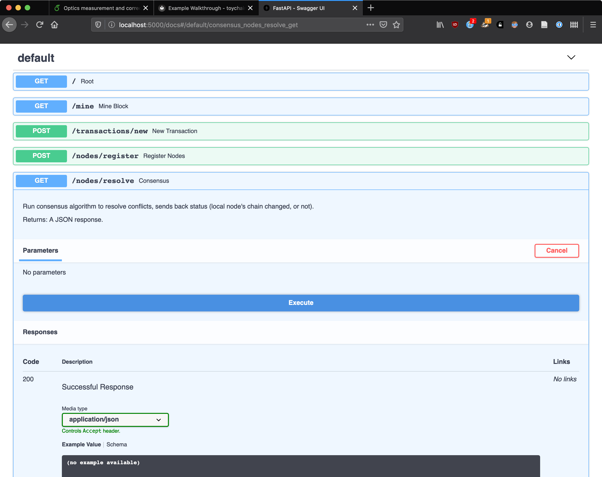

Example Walkthrough
In this section, we'll walk through the process of spinning up a few nodes and playing around with their functionality by adding and querying their chains.
I will be using FastAPI's automatic interactive documentation to perform those operations (see the Magic documentation block below), but you can also use your favorite the REST client or simply the command line.
If you decide to go with the latter, you will find included the command to run for each operation.
Starting Nodes
For convenience, I'll use Docker to spin up two detached nodes:
docker run --init --rm -dp 5000:5000 toychain
docker run --init --rm -dp 5001:5000 toychain
As a Python command
If you don't want to use Docker, you can use the toychain Python package. Run:
python -m toychain --port 5000
python -m toychain --port 5001
About processes
The node needs an ASGI server to run, and we're using uvicorn for this. However, since
uvicorn.run() is a blocking call you'll need to run the above commands in two separated terminal windows or tabs.
We now have two nodes running at respectively localhost:5000 and localhost:5001, and each one has initialized its blockchain at startup.
Magic documentation
If you open your browser and head over to the /docs (or /redocs) endpoint for any one of those two, you should
see the automatic documentation generated by FastAPI.
Each item expands to reveal details, and even let you interact with the corresponding endpoint if you click the
Try it out option.

Registering Nodes
Let's register each node in the other's network so they'll be aware of each other's existence.
To do so, we have to POST to a node's /nodes/register endpoint, with the list of node addresses to register.
Let's first register the node at localhost:5001 to the node at localhost:5000:
curl --request POST \
--url http://localhost:5000/nodes/register \
--header 'content-type: application/json' \
--data '{
"nodes": ["http://127.0.0.1:5001"]
}'
echo '{
"nodes": ["http://127.0.0.1:5001"]
}' | http POST http://localhost:5000/nodes/register
wget -qSO- \
--header='Content-Type: application/json' \
--post-data='{
"nodes": ["http://127.0.0.1:5001"]
}' http://localhost:5000/nodes/register
To do so through the documentation, let's expand the nodes/register endpoint section at localhost:5000/docs and
click on Try it out. There, in the request body, let's replace string by http://127.0.0.1:5001 and click
Execute.

You should receive a response saying:
{
"message": "1 new nodes have been successfully added",
"total_nodes": [
"127.0.0.1:5001"
]
}
Registering the second one is the same process, by POSTing to localhost:5001/nodes/register and changing the port number to 5000 in the request body.
Watch the logs
If you're running as a Python command or without detaching the Docker container, you should see the logging outputs. They'll give you some insight into what goes on when we trigger those operations.
Adding Transactions
Alright, we have two nodes up and running, aware of each other. What if someone named Lea makes a transaction and sends 10 coins to Mark. Let's make the nodes aware.
For this, we need to create the appropriate payload and POST it to the transactions/new endpoint of our running nodes:
curl --request POST \
--url http://localhost:5000/transactions/new \
--header 'content-type: application/json' \
--data '{
"sender": "Lea",
"recipient": "Mark",
"amount": 10
}'
echo '{
"sender": "Lea",
"recipient": "Mark",
"amount": 10
}' | http POST http://localhost:5000/transactions/new
wget -qSO- \
--header='Content-Type: application/json' \
--post-data='{
"sender": "Lea",
"recipient": "Mark",
"amount": 10
}' http://localhost:5000/transactions/new
Expand the transactions/new endpoint section at localhost:5000/docs, click Try it out and fill in the request
body as in the screenshot below.

Note
Technically the sender and recipient fields should be cryptowallet addresses, but we'll keep names for convenience's sake.
We get a successful response reading:
{
"message": "Transaction added to the list of current transactions and will be mined into the block at index 2"
}
Let's POST the same transaction at localhost:5001/transactions/new so both nodes receive the same info.
Oh no! Lea just realized she actually owed Mark 15 coins and not 10.
She sends a new transaction: let's go ahead and repeat the above process with an amount of 5.
Mining Blocks
The transactions registered, it's time write to them in the chain by mining a block.
To do so, we need to trigger a block mining by sending a GET request at the /mine endpoint:
curl --request GET \
--url http://localhost:5000/mine \
--header 'content-type: application/json'
http http://localhost:5000/mine
wget -qSO- --header='Content-Type: application/json' http://localhost:5000/mine
Expand the /mine endpoint section at localhost:5000/docs, click Try it out then Execute.

This takes a few seconds, since mining requires computing a proof of work for the block. The confirmation follows:
{
"index": 2,
"message": "New Block Forged",
"previous_hash": "022ec08cc0852b351781413c74a4f189e7910de1029d0ba33b04b178d9fe2b86",
"proof": 35293,
"transactions": [
{
"amount": 10.0,
"recipient": "Mark",
"sender": "Lea"
},
{
"amount": 5.0,
"recipient": "Mark",
"sender": "Lea"
},
{
"amount": 1,
"recipient": "65d83305a11e458abb96bdfb2256b365",
"sender": "0"
}
]
}
It contains many things:
- the
indexat which the block is located in the chain, - a confirmation
message, - the hash of the previous block in the chain (
previous_hash), - the
proofof work for this block, - the list of
transactionswritten in this block.
Where does this third transaction come from?
For cryptocurrencies, many entities listen for transactions in order to mine them into new blocks. Whoever manages
to get the proof of work first will be the block's creator, and can add a special transaction in which they get
rewared some coins: it's the block reward. Since through this process creating blocks introduces new bits of
currency into the economy, it is called mining.
The sender is set to 0 to specify that the transaction corresponds to currency creation, and the recipient is set
to this node's UUID.
Let's also send a GET request at localhost:5001/mine so both nodes mine a block.
Querying Chains
To see where a node's chain is at, we can send a GET request to the /chain endpoint to receive the full chain:
curl --request GET \
--url http://localhost:5000/chain \
--header 'content-type: application/json'
http http://localhost:5000/chain
wget -qSO- --header='Content-Type: application/json' http://localhost:5000/chain
Expand the /chain endpoint section at localhost:5000/docs, click Try it out then Execute.

Here is the response payload, containing the full chain (all blocks) and its length:
{
"chain": [
{
"index": 1,
"previous_hash": 1,
"proof": 100,
"timestamp": 1591985797.9658592,
"transactions": []
},
{
"index": 2,
"previous_hash": "022ec08cc0852b351781413c74a4f189e7910de1029d0ba33b04b178d9fe2b86",
"proof": 35293,
"timestamp": 1591985867.153815,
"transactions": [
{
"amount": 10.0,
"recipient": "Mark",
"sender": "Lea"
},
{
"amount": 5.0,
"recipient": "Mark",
"sender": "Lea"
},
{
"amount": 1,
"recipient": "65d83305a11e458abb96bdfb2256b365",
"sender": "0"
}
]
}
],
"length": 2
}
Where does the first block come from?
A first block is always mined when the node is started. This is because in this implementation, the proof of work is
based on the proof value of the previous block, so manually mining a block requires that there is already a previous
one. The dummy first block is always initiated with a previous_hash of 1, a proof of 100 and no transactions.
Resolving Conflicts
Right now, both nodes have the same chain (with slightly different timestamps for the blocks). What happens when a node gets slightly off tune with the rest of the others, or hears conflicting information from the nodes in the network? This is when the consensus algorithm is used: we decide to refer to the longest chain, the one with the most work put into it.
Let's say that we mine a new block, but only on our node at localhost:5001:
curl --request GET \
--url http://localhost:5001/mine \
--header 'content-type: application/json'
http http://localhost:5001/mine
wget -qSO- --header='Content-Type: application/json' http://localhost:5001/mine
Expand the /mine endpoint section at localhost:5001/docs, click Try it out then Execute.
Our node at localhost:5000 is now one block behind and needs to catch up.
Let's have it run the consensus algorithm by sending a GET request at its /nodes/resolve endpoint, and see if it adopts the other chain (which is now the longest one):
curl --request GET \
--url http://localhost:5000/nodes/resolve \
--header 'content-type: application/json'
http http://localhost:5000/nodes/resolve
wget -qSO- --header='Content-Type: application/json' http://localhost:5000/nodes/resolve
Expand the /nodes/resolve endpoint section at localhost:5000/docs, click Try it out then Execute.

Here is the response:
{
"message": "Our chain was replaced",
"new_chain": [
{
"index": 1,
"previous_hash": 1,
"proof": 100,
"timestamp": 1591985802.621658,
"transactions": []
},
{
"index": 2,
"previous_hash": "be86c08da07a6f5863b3bcacaf1e945d53b407604c6b4b01e02daa5342f6630a",
"proof": 35293,
"timestamp": 1591985874.232369,
"transactions": [
{
"amount": 10.0,
"recipient": "Mark",
"sender": "Lea"
},
{
"amount": 5.0,
"recipient": "Mark",
"sender": "Lea"
},
{
"amount": 1,
"recipient": "2e2cdb00cc614637b248f7ae1806cd8b",
"sender": "0"
}
]
},
{
"index": 3,
"previous_hash": "9dad19a1b27ecee43df60fe2d073d402b484a47a89e1430e847a35520cf3038a",
"proof": 35089,
"timestamp": 1591986065.7304928,
"transactions": [
{
"amount": 1,
"recipient": "2e2cdb00cc614637b248f7ae1806cd8b",
"sender": "0"
}
]
}
]
}
As we can see in the returned message, the node did replace its chain.
You can GET localhost:5001 to make sure the chain returned in the message above corresponds to the chain from the second node at localhost:5001.
Why do we keep the longest chain?
In short, for safety and reliability reasons. Once again, I can only recommend watching this excellent video by 3Blue1Brown. To only watch the explanation of why we keep the longest chain, you can skip to this timestamp, but watching the whole thing will give you a better understanding.